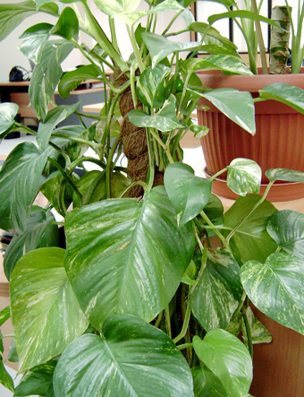

Una de las principales actividades que realizan las plantas es la filtración del aire a través de un proceso vital llamado fotosíntesis: el dióxido de carbono es absorbido y transformado en oxígeno que, de nuevo, será expulsado al exterior, renovando así la calidad del aire. El ciclo habitual de la fotosíntesis se lleva a cabo por la mañana, ya que aprovechan la luz solar para dicha actividad. Pero existen otros grupos de plantas pertenecientes a ambientes calurosos, que invierten el orden y la realizan por la noche.
Una planta incrementa la humedad en el aire. Esto nos beneficia porque contribuye a que mantengamos nuestras mucosas, la garganta y la piel bien hidratadas. Asimismo, evita que padezcamos otros males derivados de un ambiente seco como son la tos o la irritación de la piel. Un estudio ha demostrado que la ‘Philodendron Pertusum’, aumenta hasta un 5 por ciento el nivel de humedad en el aire.
Las plantas son un remedio natural contra la polución: absorben gases nocivos y partículas químicas como el formaldeído (humo del tabaco), el benceno (también existente en los cigarrillos) o el tricloroetileno (pegamento de aerosol). Estos contaminantes son procesados por la planta y transformados en nutrientes, con la ayuda de unas bacterias que se encuentran en la raíz. Para conseguir unos resultados palpables, es necesario hacerse con un grupo de distintas especies. Por tanto, una planta absorbe el humo, microorganismos patógenos y volátiles, y capta el polvo y los ácaros, reduciendo su presencia en el aire hasta un 20 por ciento. Gracias a esta limpieza, la sensación de fatiga que experimentamos, como consecuencia de una atmósfera cargada, disminuye.
Las plantas reducen el ruido, sobre todo en lugares cerrados y con suelos duros, aunque esta alteración acústica se percibe más cuando la frecuencia del sonido es muy alta. Se puede decir que ahoga los sonidos.
Tener plantas tiene efectos psicológicos y anímicos positivos. El contacto que se mantiene con éstas no determinará dichos efectos, pues serán igual de favorables tanto si se contemplan como si se trabaja con ellas.
Las plantas incrementan el nivel de concentración y comprensión, y atenúan sentimientos negativos como el miedo o el enfado. Además, está comprobado que un enfermo se recupera más rápido y mejor en presencia de flores y plantas. Su inclusión en nuestras vidas influye tanto y tan positivamente que las empresas están introduciéndolas en sus lugares de trabajo para sacar partido de sus beneficios. Hay estudios que han demostrado que trabajar con plantas disminuye el absentismo e incrementa la eficacia y productividad del empleado. Psicológicamente han resultado ser un estimulante absolutamente sano y natural. De ellas han derivado la cromoterapia y la aromaterapia, técnicas que ratifican que la influencia de los aromas y los colores, además de las funciones físicas y químicas de las plantas, estimulan y crean una sensación de bienestar en las personas, que desembocará en las demás parcelas de nuestras vidas.
Es por estos motivos que te insentivamos a empezar a plantar tus propias plantas en el hogar y formando tu propio jardín o huerto. El medio ambiente te lo agradecerá.